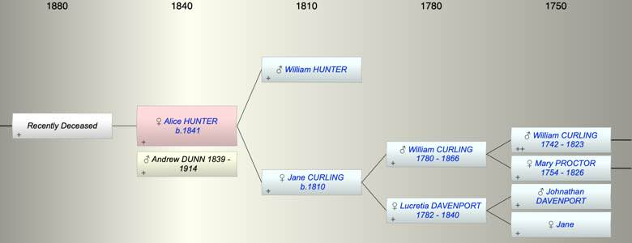

| [Index] |
| Alice HUNTER (1841 - ) |
|  |
| b. 1841 at St Stephen, London |
| +. Andrew Hunter DUNN (1839 - 1914) |
| Parents: |
| William HUNTER |
| Jane CURLING (1810 - ) |
| Children (1): |
| Grandchildren (1): |
| Events in Alice HUNTER (1841 - )'s life | |||||
| Date | Age | Event | Place | Notes | Src |
| 1841 | Alice HUNTER was born | St Stephen, London | ex 1851 census | ||
| 14 Nov 1914 | 73 | Death of husband Andrew Hunter DUNN (aged 75) | |||
| Created on a Mac™ using iFamily for Mac™ on 8 Oct 2023 |